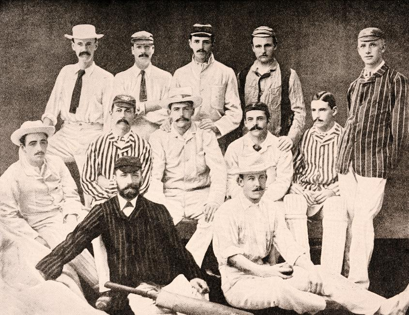
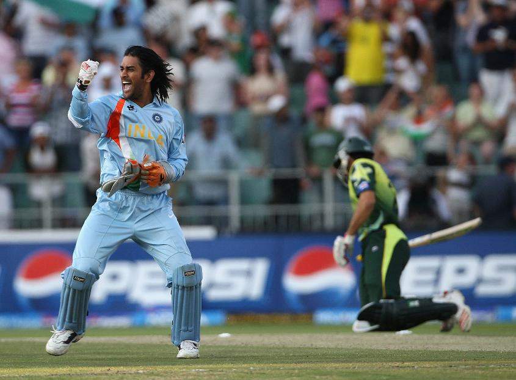

Early Cricket (Pre 1799)
Ivo Bligh's England Cricket Team

The Indian cricket team in the 1930s
India and Pakistan competing in the first ICC WT20 2007
21st Century Cricket
The 21st century has seen some of the most rapid changes in the history of the game, with arguably none bigger than the creation of a new format of the sport, the shortest version that is the three-hour spectacle of Twenty20 cricket. The advent of Twenty20 cricket, played first in county cricket in England in 2003, has led to great innovation in the game. To counter free-scoring batsmen with big hitters and strokes played through all 360 degrees, bowlers began to perfect a great variety of different deliveries and there has been a sharp increase in the quality of fielding. In 2004, the first Women’s Twenty20 International was played and the following year saw the first Men’s Twenty20 International with the format being adopted as the third official format of the sport. In September 2007, India's victory over Pakistan in the final of the first ever ICC World Twenty20, played in Johannesburg, drew a worldwide TV audience of more than 400 million. This was the catalyst for the creation of the Indian Premier League the following year. With further Twenty20 leagues launched around the world, modern cricketers in the 21st century are faced with playing cricket year-round. The new century also saw the ICC introducing a “Test Championship Table” in 2001. The following year, a “One-day International Championship Table” was introduced. These have evolved into what are now the official MRF Tyres ICC Team Rankings across all three formats of the game with the leaders of the Test rankings holding the ICC Test Championship Mace.
The ICC also expanded its development programme, aiming to produce more national teams capable of competing at the various formats. In 2004, the ICC Intercontinental Cup brought first-class cricket to 12 nations, mostly for the first time, whilst the World Cricket League structure brought competitive limited overs-cricket to many new countries and there was memorable successes for some associate nations on the global stage with Kenya, Ireland, Afghanistan and the Netherlands all producing famous victories at ICC Global Events. Afghanistan and Ireland were rewarded for their consistent performances both off and on the field resulting in the significant development and growth of cricket in their respective countries with Full-Member status in June 2017, taking the number to 12. There have been innovations on the pitch too, with the introduction in Limited Overs cricket including Power-plays affecting the fielding restrictions, using two new balls in One Day Internationals and even dug-outs for the incoming batsmen in Twenty20 cricket. There was a huge development in Test Match cricket too as the Adelaide Oval played host to the first ever day-night Test Match between Australia and New Zealand using a specially developed pink ball.
There have also been many recent technological evolutions in the game such as ball tracking, flashing stumps and bails for ensuring accurate run out decisions, infra-red cameras and edge detection technology can be used to see whether the bat has hit the ball and the Duckworth-Lewis-Stern method used to calculate targets and results in the event of unfavourable weather in limited-overs matches. In 2008, a new referral system, in which players were allowed to refer some on-field decisions to the third umpire, made its international debut in a series between India and Sri Lanka. This has evolved to become the official Decision Review System.
Early Cricket (Pre 1799)
There is a consensus of expert opinion that cricket may have been invented during Saxon or Norman times by children living in the Weald, an area of dense woodlands and clearings in south-east England. The first reference to cricket being played as an adult sport was in 1611, and in the same year, a dictionary defined cricket as a boys' game. There is also the thought that cricket may have derived from bowls, by the intervention of a batsman trying to stop the ball from reaching its target by hitting it away. Village cricket had developed by the middle of the 17th century and the first English “county teams” were formed in the second half of the century, as “local experts” from village cricket were employed as the earliest professionals. The first known game in which the teams use county names is in 1709.In the first half of the 18th Century cricket established itself as a leading sport in London and the south-eastern counties of England. Its spread was limited by the constraints of travel, but it was slowly gaining popularity in other parts of England and Women’s Cricket dates back to the 1745, when the first known match was played in Surrey. In 1744, the first Laws of Cricket were written and subsequently amended in 1774, when innovations such as lbw, a 3rd stump, - the middle stump and a maximum bat width were added. The codes were drawn up by the “Star and Garter Club” whose members ultimately founded the famous Marylebone Cricket Club at Lord's in 1787. MCC immediately became the custodian of the Laws and has made revisions ever since then to the current day.
19th Century Cricket
The game survived a lack of investment early in the 19th Century due to the Napoleonic Wars and recovery began in 1815. Sussex was the first of the English county clubs to be formed in 1839 and the rest followed suit by the end of 19th century. In 1846 a travelling “All-England Eleven” was founded as a commercial venture which did much to spread the game to areas which had never seen top-class cricket beforehand. The development of the railway network also helped the spread of cricket as teams from a long distance apart could play one other without a time-consuming journey. Not only that, but the spectators could travel longer distances to matches, increasing the size of crowds. British army units around the world encouraged the locals to play which increased the number of teams across the old British Empire. Women’s cricket played a significant role in the development of the sport in the 19th century and the first women’s county match was played in 1811. Women’s matches were often played out in front of large crowds, particularly across the South of England and in Australia the first Women’s sides began playing the sport in the 1890’s.In 1864 overarm bowling was legalised, 1864 also marked a notable first with the publication of the first Wisden Cricketers' Almanack which continues to this day. That same year, W. G. Grace began his long and influential career, contributing much to increase cricket's popularity. The first ever international cricket game was played between the USA and Canada in 1844 at the St George's Cricket Club in New York and in 1859 a team of leading English professionals visited North America on the first-ever overseas tour. In 1862 the first English team toured Australia and six years later a team of Australian Aborigines toured England in what was the first Australian cricket team to travel overseas.In 1877, an England touring team in Australia played two matches against full Australian XIs that are now regarded as the first Test matches. The following year, the Australians toured England for the first time and the success of this tour ensured a popular demand for similar ventures in future. At The Oval in 1882, the Australian victory in a tense finish gave rise to The Ashes. South Africa subsequently became the third Test nation in 1889. In 1890 the official County Championship was constituted in England. The Currie Cup started in South Africa in 1889-90 and the Sheffield Shield in Australia three years later. The period from 1890 to the outbreak of the First World War has become known as the “Golden Age of cricket” as it featured numerous great names such as Grace, Wilfred Rhodes, C. B. Fry, Ranjitsinhji and Victor Trumper.
20th Century Cricket
When the Imperial Cricket Conference (as the ICC was originally called) was founded in 1909, only England, Australia and South Africa were members. However, the West Indies (1928), New Zealand (1930) and India (1932) became Test nations before the Second World War and Pakistan (1952) soon afterwards. Cricket soared in popularity in these countries with the advent of Test Cricket and domestic competitions gradually became more formalized with the West Indies formulating an island-based First-Class competition, New Zealand continuing their Plunkett Shield that has origins back to 1906, India introducing the Ranji trophy in 1934 and Pakistan founding the Quaid-e-Azam trophy in 1953. Women’s cricket also took its first significant international steps at the start of the 20th century and the first ever Test Match was played between England and Australia in 1934. The founding of the International Women’s Cricket Council in 1958 (since merged with ICC in 2005), further developed the Women’s game and it was in 1973 that the first Cricket World Cup of any kind took place. The Women’s World Cup was hosted by England who went on to claim the inaugural cup with captain Rachel Heyhoe-Flint leading the way. After a postwar boom, slow play and lower numbers of runs characterized the 1950s, and this defensive nature of county cricket led to progressively decreased attendance. In response, in 1963 English county teams began playing a version of cricket with games of only one innings each and a maximum number of overs per innings. Limited-overs cricket grew in popularity and, in 1969 a national league was created which consequently caused a reduction in the number of matches in the County Championship.In 1970 South Africa were suspended indefinitely from international cricket competition due to apartheid and so - starved of top-level competition, the South African Cricket Board began funding so-called “rebel tours” for international players to form teams and tour South Africa. The rebel tours continued into the 1980s but when it became clear that apartheid was ending South Africa was welcomed back into international sport in 1991. South Africa played in the 1992 World Cup and then soon after played their ‘return’ Test Match against the West Indies in Barbados in April. The first limited-over international match took place at Melbourne Cricket Ground in 1971 as a time-filler after a Test match had been abandoned because of heavy rain on the opening days. The International Cricket Conference (as it was then) reacted to this development by organising the first Men’s Cricket World Cup in England in 1975, with all the Test-playing nations of the time taking part and West Indies triumphing at Lord’s in the final. In 1977 Kerry Packer signed several of the best players in the world to a privately run cricket league outside the structure of international cricket. World Series Cricket hired some of the banned South African players and allowed them to show off their skills in an international arena against other world-class players. This only lasted two years, but the longer term results of World Series Cricket have included the introduction of significantly higher player salaries and innovations such as coloured kit and night games. It wasn’t long before many of these innovations crossed over to international cricket.Such was the success of the inaugural World Cup, it was decided that it would become a regular part of the calendar with further Cricket World Cups were held in England in 1979 and 1983 before the tournament moved to India and Pakistan in 1987, which was the last event to be played using a red ball with white clothing. 1992 dawned a new era of World Cup Cricket with floodlights, coloured clothing and a white ball being utilised. In 1992, the use of a third umpire to adjudicate run-out appeals with television replays was introduced for the first time in the Test series between South Africa and India. The third umpire's duties have subsequently expanded to include decisions on other aspects of play such as stumpings, catches and boundaries. The international game continued to grow with several ICC Associate and Affiliate Members becoming involved in expanding domestic competitions and then on the international scene. And in the closing years of the 20th century, three of those countries also became Test nations: Sri Lanka (1982), Zimbabwe (1992) and Bangladesh (2000).